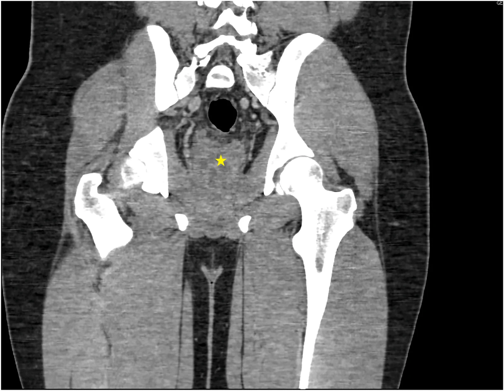
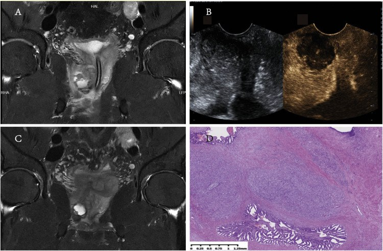
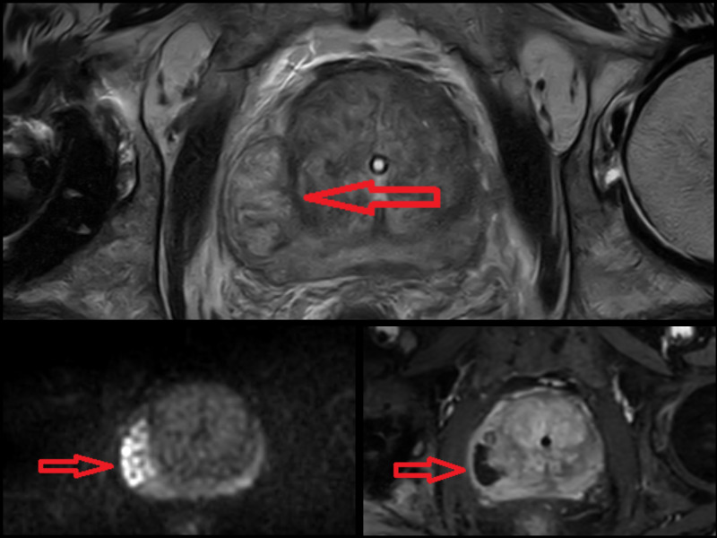
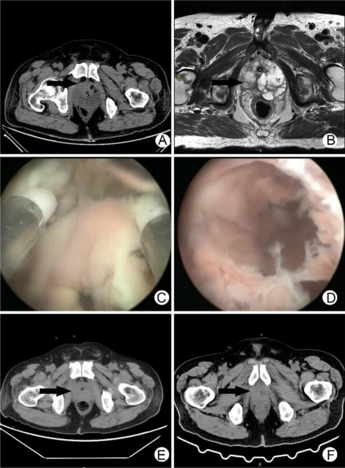

3055 — Áp-xe tuyến tiền liệt / Prostatic abscess
Tags: pattern:ap-xe pattern:o-dich vung:tien-liet-tuyen protocol:CT-bung-co-can-quang protocol:MRI-tien-liet protocol:TRUS
Mức chắc chắn (certainty): tổng hợp y văn (literature synthesis) — gộp 4 ca nguyên văn có ảnh (đối chiếu PMCID) với 1 đoàn hệ 102 ca và 3 tổng quan; số liệu lấy từ toàn văn, không lấy từ abstract.
1. Tổng quan — vì sao ổ mủ "né" thuốc và vì sao DWI tối hơn cả ung thư
- Bệnh học: áp-xe tuyến tiền liệt (prostatic abscess, PA) là ổ mủ khu trú trong tuyến, hình thành khi viêm tiền liệt tuyến cấp (acute bacterial prostatitis) không được kiểm soát: phù nề + tắc ống tuyến → vi áp-xe trong nang tuyến → hòa thành ổ lớn. Chiếm khoảng 0,5% các nhiễm khuẩn đường niệu; trong 822 ca viêm tiền liệt tuyến cấp nhập viện có 102 ca (12,4%) là áp-xe (Đài Loan 2007–2021); các loạt khác báo 6% và 21,8%, đoàn hệ Mỹ 5,4% — tức tỉ lệ phụ thuộc cách chọn bệnh và mức dùng kháng sinh.
- Yếu tố nguy cơ (số liệu gộp 210 ca): đái tháo đường 50,9%, tắc đường ra bàng quang 5,7%, xơ gan 1,4%, suy thận 0,95%; 40,4% không có yếu tố nguy cơ nào. Thủ thuật niệu khoa (đặt catheter, sinh thiết tuyến, nội soi) là cửa vào; ca 78 tuổi dưới đây khởi phát sau bóng catheter bơm sai vị trí trong niệu đạo tuyến.
- TẠI SAO CT thấy ổ dịch: mủ là nước + tế bào chết + protein, 0–20 HU, không ngấm thuốc → nổi bật trên nhu mô tuyến ngấm thuốc; vách và vỏ dày ngấm thuốc vì tăng sinh mạch viêm. Khí trong ổ (áp-xe khí thũng) là −1.000 HU và là dấu hiệu nặng, gần như đặc hiệu.
- TẠI SAO MRI T2 sáng – DWI sáng – ADC rất tối: mủ giàu nước tự do nhưng đặc, quánh, nhiều tế bào viêm và mảnh hoại tử làm hạn chế khuếch tán mạnh. Số đo thực tế: ADC 0,61–0,63 × 10⁻³ mm²/s, chồng lấp hoàn toàn với ung thư tuyến (0,93–1,43 ở loạt 2011) và thấp hơn ngưỡng nghi ung thư hiện đại (< 600 µm²/s ≈ 0,60 × 10⁻³); vùng ngoại vi lành 1,57–1,82. Đây là cạm bẫy cốt lõi: ADC không phân biệt được áp-xe với ung thư — phải dựa vào bối cảnh (sốt, khởi phát nhanh, PSA, đáp ứng kháng sinh) và MRI lặp sau 4 tháng (ổ áp-xe mất hạn chế khuếch tán, ung thư thì không).
- Ngưỡng thời gian: hình ảnh hóa khi không đáp ứng kháng sinh sau 48 giờ (hoặc xấu đi sau khi đỡ) — đây là mốc được cả 3 nguồn nhắc lại; chờ lâu hơn làm tăng nguy cơ nhiễm khuẩn huyết.
- Triệu chứng (gộp 210 ca): triệu chứng đường niệu dưới 67,1%, sốt 61%, bí tiểu cấp 33,3%, đau vùng đáy chậu/đau khi đại tiện 16,6%, đái máu 6,1%. Thăm trực tràng: dao động (fluctuance) chỉ 16–88% — không có dao động không loại trừ.
- Xét nghiệm: cấy nước tiểu dương 68,6%, cấy máu dương 39,2%; tác nhân gây bệnh chỉ mọc được khoảng 50% mẫu nước tiểu. Loạt 102 ca: bạch cầu 15.778/µL, CRP 15,4 mg/dL, thể tích tuyến 54,7 mL, ổ áp-xe 3,1 cm.
2. Mẫu hình + chẩn đoán phân biệt theo vị trí và độ lan (Gamut)
- Mẫu hình chung: ổ dịch không ngấm thuốc, bờ/vách dày ngấm thuốc, thường ở vùng ngoại vi (peripheral zone) hoặc vùng chuyển tiếp có BPH; có thể đa ổ/đa vách, có thể có khí.
- Theo vị trí: một thùy ngoại vi · trung tâm/chuyển tiếp (nền BPH) · hai thùy/đa ổ · lan ra ngoài vỏ (túi tinh, mô quanh tuyến, trực tràng, bàng quang, đáy chậu) · có khí.
- Gợi nhớ PUS: Prostatitis cấp không đáp ứng thuốc · Urinary obstruction/catheter/thủ thuật · Sepsis + đái tháo đường/xơ gan/suy giảm miễn dịch.
- Ổ dịch ngoài tuyến gặp ở 13,7%: gan 50%, thận 28,5%, còn lại cạnh sống, túi tinh, cơ mông, thành chậu, Fournier — luôn quét gan–thận khi thấy PA để không bỏ ổ nguyên phát/di căn.
- Gamut theo hình ảnh: (1) ổ dịch đơn thuần → áp-xe, nang tuyến, nang ống utricle; (2) ổ dịch có vách/kích thước lớn → áp-xe đa ổ, nhũ hóa ung thư; (3) đám đặc giảm tín hiệu không có ổ dịch → viêm tiền liệt tuyến cấp, u hạt, ung thư; (4) có khí → áp-xe khí thũng, khí sau can thiệp.
3. Bảng so sánh phân biệt (ma trận đối chiếu)

CT có cản quang, mặt cắt trục–đứng: ổ dịch đa vách (ngôi sao vàng) ở trung tâm tuyến, bờ dày, không ngấm thuốc; bóng tròn đen phía trên là bóng catheter trong bàng quang. Nguồn: Urology Case Reports 2026, Fig. 2 (PMC13670931), CC BY-NC-ND 4.0 — giữ nguyên bản, không cắt/ghép.| Thực thể (entity) | Hình ảnh điển hình (CT/MRI/US) | Chốt vào (rule-in) | Chốt loại (rule-out) | Gợi ý xác nhận |
|---|---|---|---|---|
| Áp-xe tuyến tiền liệt | Ổ 0–20 HU không ngấm thuốc, vỏ/vách dày ngấm thuốc; T2 sáng, DWI sáng, ADC 0,61–0,63 (chồng lấp ung thư); TRUS: vùng giảm âm, có vách, có thể có echo trong | Sốt + LUTS/bí tiểu + ổ dịch trong tuyến + không đáp ứng kháng sinh 48 giờ | Không có ổ dịch (chỉ phù nề lan tỏa) → viêm cấp; không sốt, PSA tăng nhanh, tổn thương đặc → ung thư | CT có cản quang; MRI đa tham số; chọc hút lấy mủ + cấy |
| Áp-xe khí thũng (emphysematous PA) | Ổ dịch + khí trong tuyến (−1.000 HU), tuyến to, có thể khí lan mô quanh tuyến | Khí trong tuyến trên người đái tháo đường + sốc nhiễm khuẩn | Khí sau TURP/nội soi < 24–48 giờ là khí thủ thuật | CT lát mỏng; cấy máu + mủ; dẫn lưu cấp cứu |
| Viêm tiền liệt tuyến cấp | Tuyến to, phù nề, ngấm thuốc lan tỏa/không đều, không có ổ dịch; TRUS giảm âm rải rác | Sốt + đau + tuyến căng đau, không ổ dịch | Có ổ dịch bờ rõ → đã thành áp-xe | Theo dõi 48 giờ; siêu âm/CT lại nếu không đỡ |
| Ung thư tuyến hoại tử / giả áp-xe | Ổ hoại tử trung tâm, bờ đặc ngấm thuốc không đều; ADC cũng rất thấp, có thể thấp hơn áp-xe | Không sốt, PSA tăng dần, tổn thương không thu nhỏ sau 4–6 tuần kháng sinh | Sốt + giảm nhanh sau dẫn lưu → áp-xe | Sinh thiết (đặc biệt dịch hút máu thay vì mủ); MRI lặp 4–6 tuần |
| Nang ống utricle / nang Müllerian | Nang đường giữa, thành mỏng, dịch theo nước (không hạn chế khuếch tán), không ngấm thuốc, không vách dày | Vị trí đường giữa + thành mỏng + không viêm | Thành dày + vách + sốt → áp-xe | MRI T2/DWI; không cần dẫn lưu nếu không triệu chứng |
| Áp-xe túi tinh | Ổ dịch trong túi tinh, thường kèm áp-xe tuyến; túi tinh to, vách | Đau vùng chậu + ổ dịch ở túi tinh | Ổ dịch chỉ trong tuyến → PA đơn thuần | MRI; cấy dịch |
| Viêm u hạt / xanthogranulomatous | Đám đặc/nốt giảm tín hiệu, không ổ dịch điển hình, có thể đa ổ; tiền sử BCG hoặc GPA | Tiền sử BCG bàng quang/GPA + tổn thương đặc | Có ổ mủ + cấy dương → áp-xe nhiễm khuẩn | Sinh thiết; ANCA/BCG; đừng dẫn lưu mù |
4. Protocol chụp + phân độ và ngưỡng can thiệp
- CT bụng–chậu có cản quang (thì tĩnh mạch cửa 70–90 giây), lát 1–2 mm: đo ổ ở 3 bình diện (cm), đo thể tích tuyến, tìm khí, vách, lan ra mô quanh tuyến/túi tinh/trực tràng, và quét gan–thận; 96,1% ca trong đoàn hệ được chẩn đoán bằng CT.
- MRI đa tham số (3T): T2 3 mm + DWI b ≥ 1.400 + ADC + DCE; chỉ định khi CT không rõ, nghi ung thư, hoặc cần đánh giá lan ra ngoài vỏ; tránh gadolinium khi eGFR thấp (ca 78 tuổi đã cắt một thận).
- TRUS: đầu dò linear 7,5 MHz, đo 3 bình diện, dùng để dẫn đường chọc hút; độ chính xác chẩn đoán 80–100%, nhưng giai đoạn sớm có thể không thấy ổ.
- Phân độ siêu âm – lâm sàng (Dell'Atti): I ổ khu trú một thùy ≤ 10 mm; II ổ > 10 mm và/hoặc vượt đường giữa; III đa ổ hai thùy, mỗi ổ ≤ 10 mm; IV đa ổ hai thùy, > 10 mm; V lan vào bàng quang/niệu đạo/túi tinh/vỏ tuyến.
- Ngưỡng điều trị (bằng chứng hiện có): < 1 cm, đơn ổ, bệnh nhân ổn định** → kháng sinh **4–6 tuần**; **1–2 cm** → cân nhắc chọc hút; **> 2 cm, đa ổ/đa vách, có khí, nhiễm khuẩn huyết → bóc nắp/đối quang nội soi (TUR/deroofing).
- Vì sao ưu tiên đường niệu đạo ở ổ lớn: loạt 44 ca: thành công lần đầu 96% (TUR) vs 68,4% (chọc hút), tái phát 1/25 (4%) vs 6/19 (31,6%), p < 0,03, nằm viện 6,1 vs 12,5 ngày; chọc hút vẫn đạt 89,4% sau nhiều lần (trung bình 4,1 lần, 1–7 lần). Laser holmium bóc nắp 8 ca đa ổ: 0 tái phát, 3/8 són tiểu tạm thời.
- Kháng sinh: theo cấy, 4–6 tuần (đường tĩnh mạch trước, thuốc thấm tuyến tốt như fluoroquinolone/TMP-SMX khi ra viện); thêm metronidazole khi nghi kỵ khí; dẫn lưu ổ mủ là điều trị quyết định, không có kháng sinh nào thay được.
- Áp-xe khí thũng: tử vong tới 25% nếu chậm; dẫn lưu cấp cứu + kiểm soát đường huyết + kháng sinh phổ rộng.
flowchart TD
A["Sốt + LUTS hoặc bí tiểu, không đáp ứng kháng sinh 48 giờ"] --> B["CT bụng–chậu có cản quang, lát 1–2 mm"]
B --> C{"Có ổ dịch trong tuyến?"}
C -->|"Không"| D["Viêm tiền liệt tuyến cấp — kháng sinh 2–4 tuần"]
C -->|"Có"| E{"Kích thước, số ổ, có khí?"}
E -->|"< 1 cm, đơn ổ, ổn định"| F["Kháng sinh 4–6 tuần + siêu âm lại"]
E -->|"1–2 cm"| G["Chọc hút qua TRUS hoặc đáy chậu + cấy mủ"]
E -->|"> 2 cm, đa ổ, có khí, nhiễm khuẩn huyết"| H["Bóc nắp / TUR nội soi ± dẫn lưu"]
H --> I{"Còn ổ dịch hoặc tái phát?"}
I -->|"Có"| J["Chọc hút lặp / laser holmium / HoLEP"]
I -->|"Không"| K["Kháng sinh theo cấy 4–6 tuần, theo dõi 4–6 tuần"]
5. Biến thể bình thường và cạm bẫy
- ADC rất thấp, chồng lấp với ung thư: đừng dùng DWI để "loại" ung thư. Ổ áp-xe có ADC 0,61–0,63, ung thư 0,93–1,43 ở loạt 2011 và ngưỡng hiện đại < 600 µm²/s cũng nằm trong vùng này; vùng ngoại vi lành 1,57–1,82 × 10⁻³ mm²/s. Chốt bằng bối cảnh + MRI lặp sau 4 tháng (áp-xe mất hạn chế khuếch tán).
- Dịch hút ra MÁU = cờ đỏ: ca 36 tuổi ghép thận, PSA 1,65 → 4,53 → 7,3 ng/mL trong 4 tháng, MRI/CEUS gọi "áp-xe tuyến"; chọc hút ra máu → sinh thiết ngay → ung thư tuyến pT3bN1 (ổ "áp-xe" 4 cm là u hoại tử). Quy tắc: dịch máu → sinh thiết, không theo dõi kháng sinh.
- Không có dao động khi thăm trực tràng: chỉ gặp 16–88%, nên thăm trực tràng bình thường không loại trừ; ngược lại thăm mạnh có thể gây nhiễm khuẩn huyết.
- Ổ < 2 cm vẫn có thể khỏi bằng kháng sinh: ca 16 tuổi có ổ 3,5 × 2,1 cm đa vách khỏi hoàn toàn với levofloxacin 4 tuần (không can thiệp) — nhưng phải theo dõi sát; ổ lớn + sốc thì không chờ.
- Khí trong tuyến: sau nội soi/TURP < 24–48 giờ có thể là khí thủ thuật; khí + sốt + đái tháo đường ở bệnh nhân chưa can thiệp là áp-xe khí thũng.
- Bỏ sót ổ thứ hai: 13,7% có ổ ngoài tuyến (gan 50%, thận 28,5%) — đọc lại gan, thận, túi tinh trên cùng phim.
- Hình ảnh sau dẫn lưu: ổ dịch tồn dư nhỏ trong 4–6 tuần là bình thường; chỉ chọc lại khi sốt dai dẳng/tăng kích thước.

Cạm bẫy ung thư giả áp-xe: (A) T2 coronal lần đầu — ổ tăng tín hiệu ở đỉnh tuyến, viêm quanh tuyến; (B) siêu âm cản quang — vùng "không hóa lỏng"; (C) T2 lần hai sau 4 tháng — tổn thương TO RA; (D) mô bệnh — ung thư tuyến kém biệt hóa. Dịch hút ra máu, không phải mủ. Nguồn: Current Therapeutic Research 2026, Fig. 1 (PMC13453567), CC BY-NC 4.0.6. Tự lượng giá — Blind Quiz
Ca 1 — Nam 16 tuổi, đau dương vật–đáy chậu 3 tuần, tiểu buốt, không sốt; đã dùng 2 đợt kháng sinh không đỡ.
- Hỏi: ổ dịch nằm ở đâu, có vách không? Ba chẩn đoán phân biệt? Vì sao bệnh nhân không sốt mà vẫn là áp-xe?
Bấm để hiện đáp án (findings + chẩn đoán)
- Dấu hiệu: tuyến tiền liệt to, chứa ổ dịch đa vách lớn nhất 3,5 × 2,1 cm (ngôi sao vàng), bờ dày, không ngấm thuốc; bóng catheter trong bàng quang.
- Chẩn đoán: áp-xe tuyến tiền liệt sau khi bơm 15 mL nước hoa sen vào niệu đạo dưới áp lực (dịch trào ngược vào ống tuyến). Nước tiểu > 182 bạch cầu/HPF nhưng bạch cầu máu 8,0 và không sốt — không sốt/không tăng bạch cầu không loại trừ.
- Điều trị: kháng sinh tĩnh mạch rồi uống levofloxacin 4 tuần, khỏi triệu chứng sau 2 tuần (ổ > 2 cm vẫn có thể điều trị nội khoa ở người trẻ ổn định).
- Nguồn: Urology Case Reports 2026, Fig. 2 (PMC13670931), CC BY-NC-ND 4.0.
Ca 2 — Nam 78 tuổi, sau mổ thay khớp háng: bí tiểu, sốt cao, CRP 213 mg/L, procalcitonin 2,79 ng/mL; cấy máu và nước tiểu Pseudomonas aeruginosa.

- Hỏi: mô tả tín hiệu trên 3 chuỗi? Vì sao chọn MRI thay vì CT ở bệnh nhân có khớp nhân tạo? Ngưỡng can thiệp?
Bấm để hiện đáp án (findings + chẩn đoán)
- Dấu hiệu: tuyến 170 mL; hai ổ ở vùng ngoại vi và nhiều vi áp-xe vùng chuyển tiếp — T2 tăng tín hiệu, DWI b cao sáng, ADC tối ở cùng vị trí (mũi tên đỏ); bờ ngấm thuốc.
- Chẩn đoán: áp-xe tuyến tiền liệt do Pseudomonas, sau bóng catheter bơm sai trong niệu đạo + BPH tắc đường ra. MRI được chọn vì dị ứng/không dùng được cản quang (đã cắt một thận) và tránh giả ảnh kim loại khớp háng trên CT.
- Điều trị: bóc nắp hai ổ bằng laser thulium:YAG 100 W (2 J, 50 Hz), lấy thêm 112 g mô; hết sốt ngày hậu phẫu 2, rút catheter ngày 5, ra viện ngày 10.
- Nguồn: Croatian Medical Journal 2026, Fig. 1 (PMC13014293), CC BY 2.5.
Ca 3 — Nam 57 tuổi, đái tháo đường không điều trị, sốt 39,4 °C, lú lẫn, đường huyết vượt ngưỡng đo, procalcitonin > 100 ng/mL.

- Hỏi: dấu hiệu nào trên CT khẳng định chẩn đoán nặng? Hai ổ dịch khác cần tìm ở đâu? Xử trí đầu tay?
Bấm để hiện đáp án (findings + chẩn đoán)
- Dấu hiệu: (A) CT trục — tuyến to, giảm tỷ trọng, khí trong thùy trái; (B) T2 trục — ổ tăng tín hiệu đa vách; (C–D) nội soi — mủ hồng trong ổ; (E–F) CT sau mổ — ổ và khí tiêu biến.
- Chẩn đoán: áp-xe tuyến tiền liệt khí thũng (emphysematous prostatic abscess) do Klebsiella pneumoniae (cấy máu + mủ), trên nền đái tháo đường mất kiểm soát; khí + sốc nhiễm khuẩn = tử vong tới 25% nếu chậm.
- Xử trí: kháng sinh phổ rộng + kiểm soát đường huyết + bóc nắp nội soi cấp cứu (ngày 5); hết sốt ngày 1 sau mổ, ra viện ngày 3.
- Bẫy: khí cũng có thể là khí thủ thuật sau đặt catheter/nội soi — ở ca này khí xuất hiện trước mọi can thiệp tuyến, kèm sốc.
- Nguồn: Clinical Case Reports 2025, Fig. 1 (PMC12137182), CC BY 4.0.
Bài liên quan chéo
- 158 – Tiền liệt tuyến & PI-RADS v2.1 (đọc DWI/ADC vùng ngoại vi; áp-xe là "kẻ bắt chước" PI-RADS 4–5)
- 100 – Tổng quan hệ Bụng (bảng DDx + định hướng hệ)
- 103 – Áp-xe gan sinh mủ do Klebsiella & hvKP (ổ thứ hai hay gặp: gan 50%)
- 148 – Nhiễm trùng mảnh ghép nội mạch ĐMC (cùng nguyên lý: ổ mủ quanh vật liệu nhân tạo)
- 1660 – Stent niệu quản lưu quên & kết vôi (nhiễm khuẩn đường niệu trên dụng cụ)
Không dùng để chẩn đoán độc lập khi chưa có người hướng dẫn.